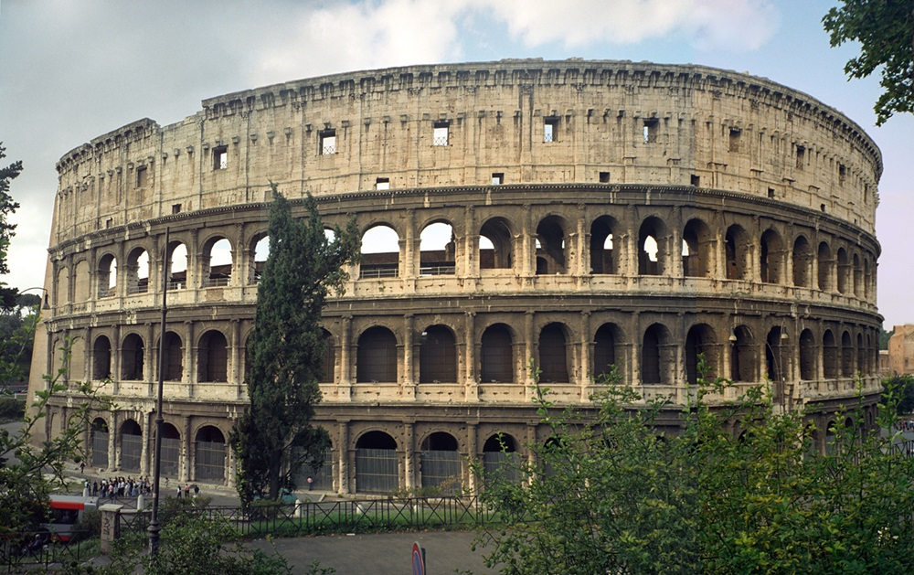
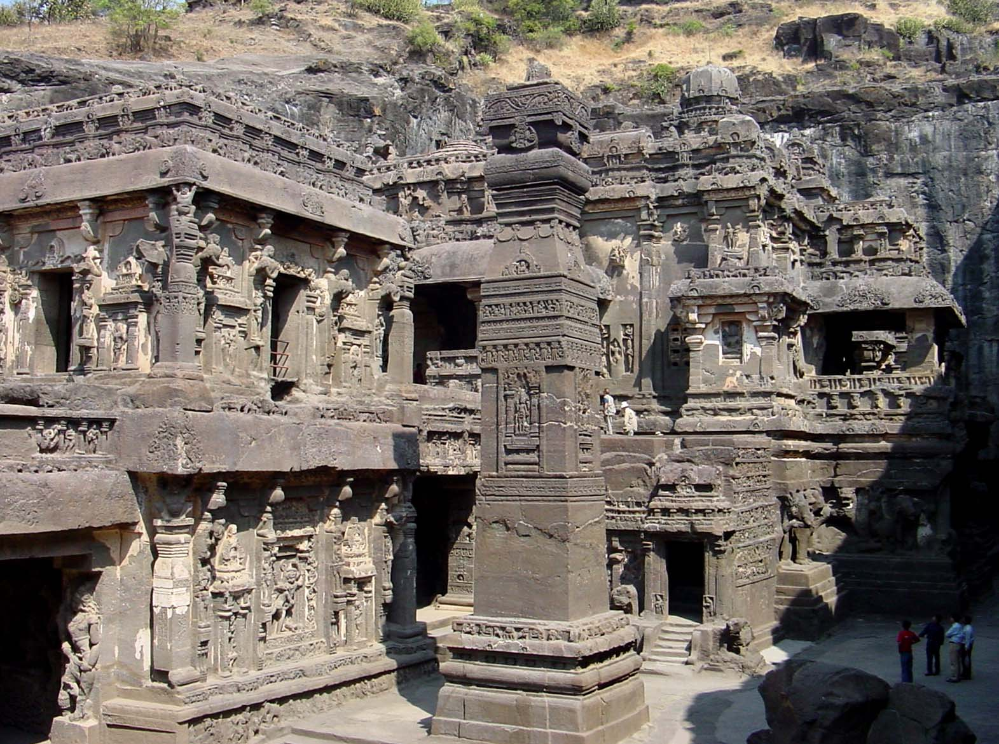

Ancient Roman architecture
Posted on 01.01.2017 by Someone

Ancient Roman architecture adopted the external language of classical Greek architecture for the purposes of the ancient Romans, but grew so different from Greek buildings as to become a new architectural style. The two styles are often considered one body of classical architecture. Roman architecture flourished in the Roman Republic and even more so under the Empire, when the great majority of surviving buildings were constructed. It used new materials, particularly concrete, and new technologies such as the arch and the dome to make buildings that were typically strong and well-engineered. Large numbers remain across the empire, sometimes complete and still in use.
View post
Ancient Greek architecture
Posted on 01.01.2017 by Someone

The architecture of ancient Greece is the architecture produced by the Greek-speaking people whose culture flourished on the Greek mainland, the Peloponnese, the Aegean Islands and in colonies in Anatolia and Italy for a period from about 900 BC until the 1st century AD. Ancient Greek architecture is best known from its temples, many of which are found throughout the region, with the Parthenon regarded as one of the most important examples. Most remains are incomplete ruins, but a number survive substantially intact, mostly outside of modern Greece.
View post
Ancient Indian Architecture
Posted on 01.01.2017 by Someone

Indian architecture is as old as the history of the civilization. The earliest remains date back to the Indus Valley cities. Among India’s ancient architectural remains, the most characteristic are the temples, Chaityas, Viharas, Stupas and other religious structures. The distinct architectural style of temple construction evolved in almost all regions. The rock-cut structures present the most spectacular piece of ancient Indian art. Most of the rock-cut structures were related to various religious communities and were carved out of solid rock.
View post